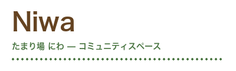

🌱 たまり場 Niwaとは？
たまり場 Niwaは、使われなくなった古民家を素敵にリノベーションして生まれた、地域のみんなのためのコミュニティスペースです。代表の田中は元大工で、木のぬくもりを活かした空間づくりにこだわっています。
ここでは誰もが主役。子どもからお年寄りまで、多世代が集う温かい場所です。「何かしたいけど、何をすれば…」そんなあなたにぴったりの活動がきっと見つかります！✨


古民家をリノベーションした温かみのある空間で、地域のつながりを育みませんか？子ども食堂、DIYワークショップ、高齢者サロンなど、多彩な活動であなたの「やりたい」を応援します！
🙋 ボランティアに参加する！たまり場 Niwaは、使われなくなった古民家を素敵にリノベーションして生まれた、地域のみんなのためのコミュニティスペースです。代表の田中は元大工で、木のぬくもりを活かした空間づくりにこだわっています。
ここでは誰もが主役。子どもからお年寄りまで、多世代が集う温かい場所です。「何かしたいけど、何をすれば…」そんなあなたにぴったりの活動がきっと見つかります！✨
月2回開催。地域のこどもたちに温かいごはんと安心できる居場所を提供しています。調理スタッフ大募集中！
元大工の代表が教える本格DIY教室。初心者でも安心して参加できます。自分だけの作品を作りましょう！
週1回のお茶会とおしゃべりの場。一人暮らしのお年寄りが笑顔で過ごせる居場所づくりをしています。
勉強、読書、リモートワーク、なんでもOK！Wi-Fi完備の自由な空間で、あなたのペースで過ごせます。
| 曜日 | 活動内容 | 時間 |
|---|---|---|
| 月曜日 | フリースペース開放 | 10:00〜17:00 |
| 水曜日 | 高齢者サロン | 13:00〜16:00 |
| 金曜日 | フリースペース開放 | 10:00〜17:00 |
| 第1・3土曜 | 子ども食堂 | 11:00〜14:00 |
| 第2・4土曜 | DIYワークショップ | 13:00〜16:00 |
「定年後に何かしたいと思っていたときに、たまり場Niwaに出会いました。子ども食堂の調理スタッフをしていますが、子どもたちの笑顔が最高のやりがいです！毎回参加するのが楽しみです！」
「大学生ですが、DIYワークショップが楽しすぎてハマりました。代表の田中さんから本物の技術を学べるのは本当に貴重な経験です。地域の人との交流も新鮮で素晴らしいです！」
「子育て中で孤立しがちでしたが、ここで同じ境遇のママ友ができました。子どもも楽しんでいるし、私自身もリフレッシュできる大切な場所です。本当に感謝しています！」
A: もちろんです！まったくの未経験の方でも大歓迎です。先輩スタッフが丁寧にサポートしますので、安心してご参加ください。みんな最初は初心者でした！😊
A: 週1回からでOKです！あなたのペースで無理なく参加していただけます。月1回だけでも全然問題ありません！
A: 一切不要です！必要なのはあなたの温かい気持ちだけ。料理が得意でなくても、DIYが初めてでも、誰でも活躍できる場所です！💪
A: 申し訳ありませんが、現在は交通費の支給はございません。ただし、活動中のお茶やお菓子は用意しています！🍵
たまり場 Niwaは、あなたの参加を心からお待ちしています！年齢・経験問わず、どなたでも大歓迎。まずは一度、見学に来てみませんか？
🙋♀️ ボランティアに応募する！🙋♂️※ 見学だけでもOKです。お気軽にどうぞ！